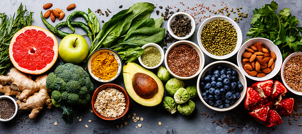

About fresh food
Fresh food is food which has not been preserved and has not spoiled yet. For vegetables and fruits, this means that they have been recently harvested and treated properly postharvest; for meat, it has recently been slaughtered and butchered; for fish, it has been recently caught or harvested and kept cold. you can enjoy the benefits of a diet rich in fresh produce:
- Serve fruits and vegetables at every meal.
- Give your family a choice.
- Plan ahead before shopping.
- Eat healthy on the go.
- Avoid the snack trap.
- Be a good role model.
You can find reason to eat fresh food here

- 